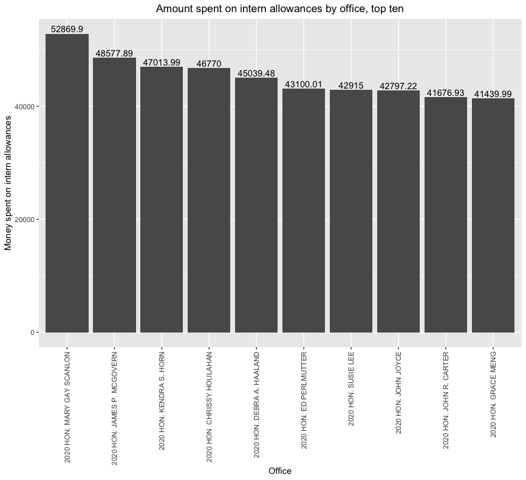
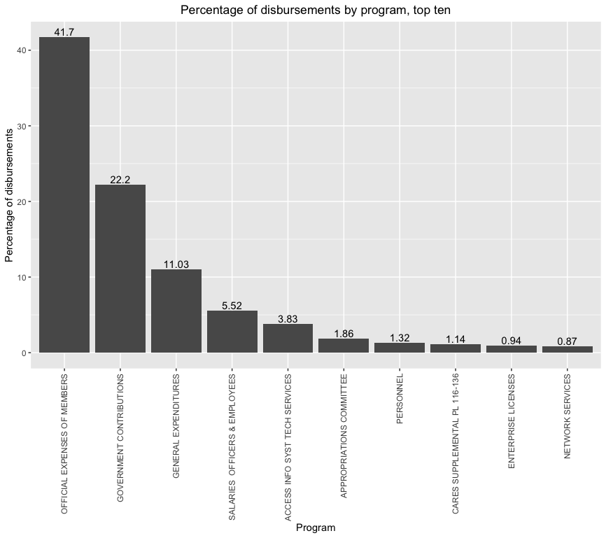

Analysis of Q3 2020 House disbursements
13 Feb 2021
The United States House of Representatives publishes data of its disbursements, basically the money it paid out to others. It gives a comprehensive picture of the workings of the House, so outsiders can see how the money is being put to work.
I analyzed the data from the third quarter of 2020. In the rest of this essay I share my findings.
Intern allowances
DC internships on and off Capitol Hill are often unpaid. Some offices, however, give some compensation in the form of stipends or even a small salary.
During the third quarter of 2020 offices spent $5,140,045 on what’s called “ intern allowances”, with a median of $3,716. The most spent by an office was $52,869. Surprising to me, the lowest amount spent by an office was -$2,700. I wonder how that happened.
Below are the offices that spent the most money on intern allowances.
Leading the list is Representative Mary Gay Scanlon of Pennsylvania, followed by Rep. James P. McGovern of Massachusetts and Rep. Kendra S. Horn of Oklahoma.
Programs
Unsurprisingly, the largest category of spending by program is the official expenses of Members. This category of spending made up 41% of the disbursements in the third quarter of 2020. It includes things like the salaries of employees, rent, and travel. Members don’t just have their office and staff in Washington, DC. They also have at least one office in their district that handles matters such as casework and local events.
Student loans
The next largest category is government contributions. Student loan payments make up most of the payments, but a small portion of their total value.
Hill staffers are highly educated; a college degree is the minimum educational requirement, and graduate degrees are preferred. Hill staffers also don’t make much. A staffer making fifty thousand dollars a year, living in one of the United State’s most expensive cities, with an expensive education to pay off, is going to struggle to make ends meet. It then makes sense that student loan repayment assistance is such a prevalent item.
Despite this, student loan payments make up about one percent of the value of the payments in the government contributions program. The largest contributions were to FERS, the federal employee retirement system, FICA (i.e., payroll taxes), and insurance.
Takeaways
The House of Representatives is a complex organism that has a life of its own. Making it all work is an impressive feat, that requires the coordination of thousands of people. We get an insight into how that chaos is managed through the disbursements. It’s not cool to give the government credit for anything, but I think it’s great that these data are available for us to see. It provides more transparency into the working of Congress. You can see exactly where the money goes.
Code for the charts can be found on my GitHub